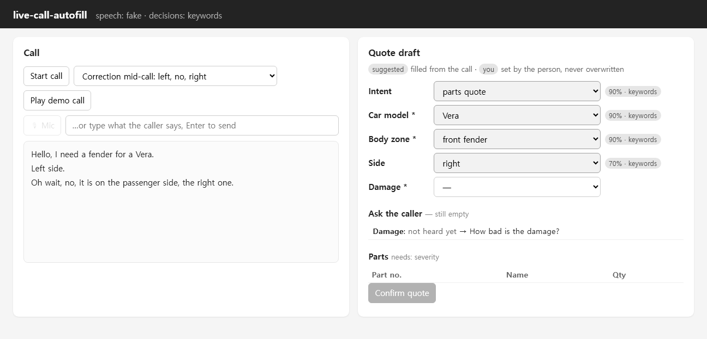

Live call-to-quote autofill
While a repair shop is still on the phone — “a fender for the Vera, no, not left, the right one” — the quote form fills itself in, and the person on the call has the last word. A decision model picks from fixed lists (car, body zone, side, damage), so it can't invent a part; exact part numbers come from the catalogue.
Measured on 22 labelled, staged calls: 74–75 of 78 field values filled, 0 wrong; deciding on partial speech had the draft complete 4–23 s earlier.
